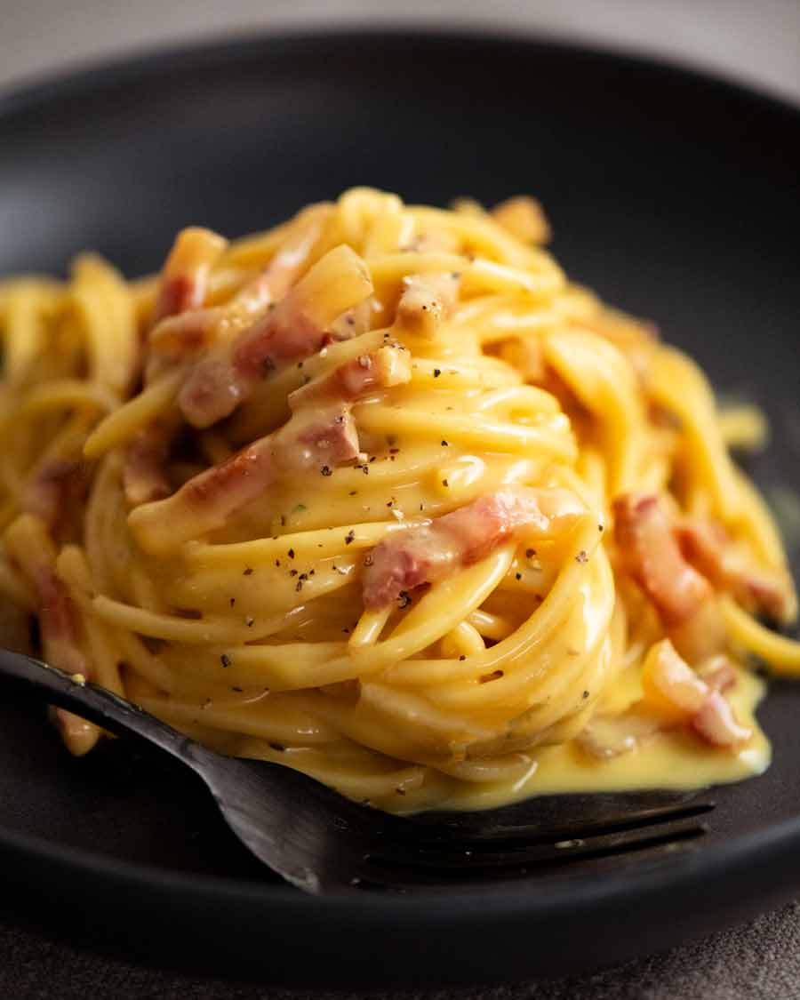

Carbonara Description
This recipe will show you how to make the most decilious pasta Carbonara you ever made !
Ingredients:
- 3 eggs
- 100 grams of "Parmigano Regiano" cheese
- 150 grams of "Panceta" or preferably "Guanchalle"
- Salt and Black Pepper
Steps:
- Cut the meat into small pieces and put it in the pan(Low Heat).
- Put all the eggs into a bowl and beat them for 30 seconds.
- Grate the cheese and mix it in with the eggs, make sure it becomes like a paste.Put a lot of black pepper in it as well.
- Put 1L of water to a boil and add salt till it becomes "Saltier than the ocean" and put a pasta of your choice when the water starts bubbling till the pasta is "Al Dente"
- Remove the bacon, if it's crispy enough. DO NOT remove the fat from the bacon we'll need it later on.
- Add a little bit of pasta water to your pan and put the pasta in it as well.Switch off the stove and add egg and cheese mixture.Stir around and make sure you don't get scrambled eggs
- Add the Bacon into the mix, grate more cheese and add more black pepper
- Bon Apettit!